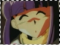

» Information ::: Topic - Xelloss-----------------------------------------------------------
What intrigued me about Xelloss when I first saw him was his mysterious behavior. His first appearance was in episode 2 of Slayers NEXT, where he introduced himself and said he was also in search of the Claire Bible manuscript and wanted to travel with Lina and company. Lina and the others, especially Zel, were immediately suspicious of him and his behavior (and the fact that he burned the manuscript that Zel wanted to see^_^), but didn't suspect that he was a mazoku. Throughout the series, he remains very secretive, and little by little, you find something new about him. One reason I like Slayers is that the plot is not omniscient.^^
Xelloss is incredibly secretive. If he's asked a question regarding who he actually is, or what he's after, he's known to reply, "Sore wa himitsu desu" (It's a secret) with a silly smile on his face. Xelloss always smiles with his eyes closed, this is mostly because his amethyst and devious eyes would definitely give away his identity. Xelloss chooses what he wants to tell Lina and what he doesn't. He knows a lot more than Lina about what's going on, especially in TRY. Lina and the others didn't realize that he was a mazoku in NEXT, and a powerful one, until Chaos Dragon Gaav appeared upon Xelloss's request.
Xelloss is also very devious. His hobby is tricking people and manipulating them to do what he wants. In Slayers NEXT, one of his objectives is to destroy the Clair Bible manuscripts, for they're a threat to the Mazoku. Right after Xelloss introduced himself in Episode 2 of NEXT, he tipped Lina and the group where a copy of the Clair Bible manuscript is. After they went to search for the manuscript, Xelloss doublecrossed them by revealing their objective to the ones guarding the manuscript. He then took advantage of the chaos and let the leader lead him unknowingly to the manuscript and destroyed it before Zel or anyone could see it. Xelloss would lie, cheat, and do just about anything tricky to get his goals achieved.
He is the comic relief and sometimes the climax of an episode. I personally find him hilarious from his sarcasm/ mockery. Even under severe circumstances, he still manages to comment a joke and temporarily losen up the tension. (Martina also gets the job done as well.^_^) In Episode 19(?) of Slayers NEXT, Xelloss got the crap beaten out of him by Gaav, but he kept a silly smile on his face most of the time, even when he's literally at the edge of Gaav's sword, and he told Gaav that the Hellmaster's plans were "a secret!" ^_^
Xelloss isn't only a comic relief however. He's almost like a Dr. Jekyll and Mr. Hyde. One minute, he's a laughing stock of the moment, and the next, he's the evil, manipulative priest. In TRY, Xelloss's mission - slightly changed from killing Valgarv - was to get Valgarv to join the Mazoku race that Xelloss is part of. When Valgarv rejected the offer, Xelloss painfully, very painfully, tortured Valgarv with his staff. Afterwards, he attempted to drop Filia on Valgarv, but didn't succeed, for he rolled away. When fighting with Lina's enemies, (although that's rare) he is merciless and will do whatever it takes to get the job done. He will even sacrifice Lina and anyone else if it's convenient for the Mazoku.
Xelloss is a complicated, two-faced character, and sometimes it's quite hard to tell whether he's a protagonist or an antagonist. If you had to choose, I'd say he's an antagonist, for he's a pure Mazoku and that alone pretty much makes him a bad guy.
<<
return